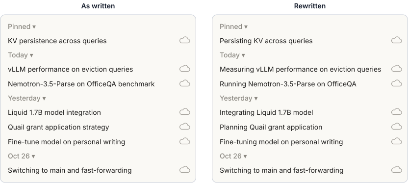
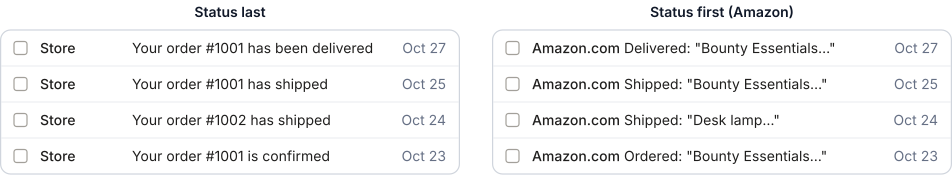
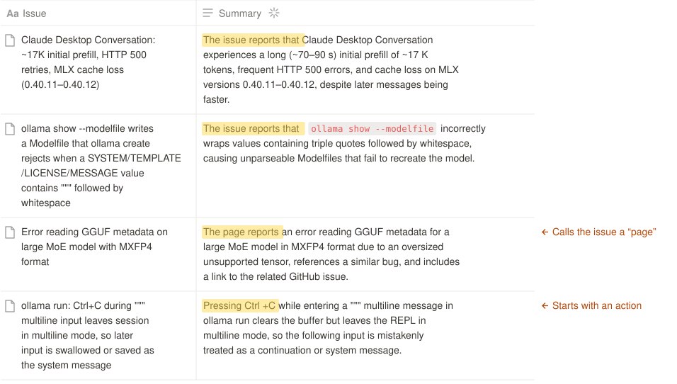
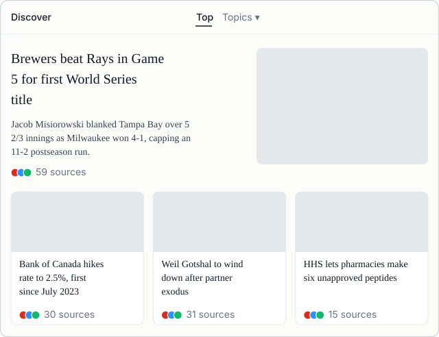
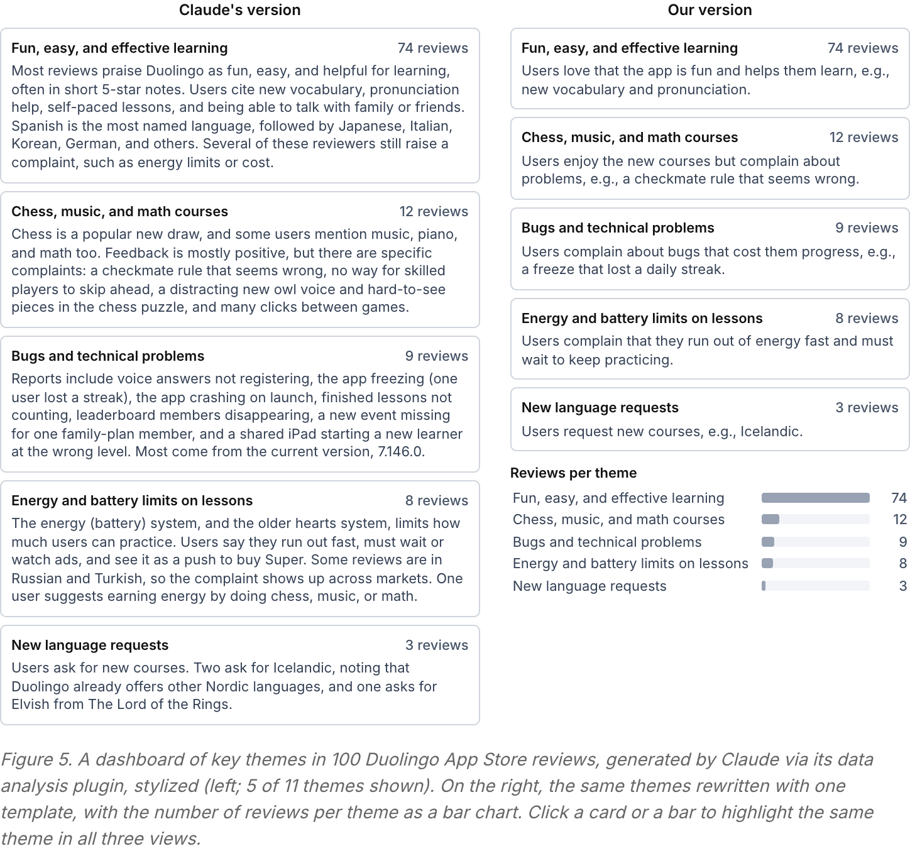

Лента сгенерированных заголовков и сводок читается быстро, когда все её пункты устроены одинаково, а различия стоят в начале и что-то значат.
Читатель не вчитывается в ленту, а сканирует её. Поэтому модель должна писать каждый пункт предсказуемо и единообразно. Авторы предлагают отдать этот чек-лист coding-агенту или оформить его как skill.
Начинайте пункт с подлежащего или глагола. Если подлежащее везде одно, опустите его и начинайте с глагола.
В списке читатель часто видит только первые два слова каждого пункта. Отличительные слова ставьте туда.
Держите в списке одну структуру и одно слово на понятие: не «issue» в одной строке и «page» в другой.
Читатель ищет смысл в любом отличии пункта. Если длина, состав или слова различаются, за этим должна стоять причина.
В панели жалоб пишите «complain», в панели похвалы — «love». Оценка темы становится понятна по одному глаголу.
Такие ленты уже стали частью повседневных продуктов. В Claude Code и Codex боковая панель показывает сгенерированные названия прошлых сессий агента, а Apple Intelligence на iPhone группирует и пересказывает стопки уведомлений. Вдобавок люди создают с помощью AI временные панели и страницы и широко ими делятся.
Модель оформляет каждый пункт по-своему, а для быстрого чтения пункты должны быть предсказуемыми и единообразными. Свой чек-лист авторы вывели из работы над такими панелями и из чтения их содержимого.
В 1970 году психолингвист Thomas Bever описал стратегию NVN у читателей английского: первое существительное они считают подлежащим, следующий глагол — действием, следующее существительное — объектом. Если текст не следует этой схеме, приходится перечитывать.
Читатель сразу понимает: агент (подлежащее) исправил (действие) ошибку (объект).
Сначала кажется, что bug что-то исправил. Лишь на «by the agent» читатель находит настоящее подлежащее и разбирает фразу заново.
Схема конспекта по примерам из статьи.
Начните каждый пункт с подлежащего или глагола. Если подлежащее одно на все пункты, опустите его. Первый глагол поставьте во время, которого ждёт читатель: прошедшее, продолженное или будущее.
Заголовки из боковой панели Claude смешивали существительные, герундии и повелительное наклонение. Подлежащее у всех сессий одно — агент, и все сессии активны, поэтому авторы начали каждый заголовок с глагола в продолженной форме.

рис. 1 из статьиJakob Nielsen с помощью eye tracking показал, что страницы читают по F-образной схеме: начало каждой строки прочитывают, большую часть остального пропускают. В списке читатель часто видит лишь первые два слова пункта. Отсюда два шага: найдите слова, которые отличают пункт от остальных, и передвиньте их как можно ближе к началу.

рис. 2 из статьиLyn Frazier с коллегами измерили скорость чтения предложений из двух частей, соединённых через «and». Вторая часть читалась быстрее, когда повторяла структуру первой. Авторы переносят этот результат на списки. Правило «одно слово на понятие» подкрепляют стандартом ASD Simplified Technical English и четвёртой эвристикой Nielsen.

рис. 3 из статьи
рис. 4 из статьиВ работе 1986 года Jock Mackinlay ввёл для автоматического построения графиков принцип expressiveness: график выражает все факты из данных и только их. Если один столбец красный, читатель решит, что цвет что-то значит. Авторы переносят идею на текст: отличие пункта по длине, структуре или словам тоже будет прочитано как сигнал.

рис. 5 из статьиАвторы запустили плагин анализа данных на 100 свежих отзывах. Версию 7.146.0 называет только карточка об ошибках, а отзывы на русском и турецком упоминает только карточка об энергии. Читатель не может понять, важны ли эти детали: только ли в этой версии есть ошибки и только ли из англоязычных отзывов взяты остальные темы.
В каждой карточке теперь одно предложение о том, что говорят пользователи, и, как правило, один пример из отзывов. Число отзывов вынесено в столбчатую диаграмму: 74, 12, 9, 8 и 3. Часть деталей теряется, но отзывы по любой теме можно открыть.
Панель часто показывает один вид сведений, например что не нравится клиентам. Внимания на сканирование уходит мало, и глагол с ясной окраской помогает понять пункт быстрее.
Chess is a popular new draw…
Так начинается карточка Claude о шахматах, хотя большая её часть перечисляет жалобы. С первого взгляда не видно, хорошая это новость или плохая.
Users love Users complain
В версии авторов глагол с первого слова отделяет похвалу от проблемы. Для карточки о шахматах они пишут: «Users enjoy the new courses but complain about problems».
Сами исследования проводились не на лентах AI-текста. Перенос на списки и панели предлагают авторы статьи, и собственных замеров скорости чтения в статье нет.
| Правило | Что изучал источник | Что добавляют авторы |
|---|---|---|
| 1. Разбор | Понимание предложений у читателей английского (Bever, 1970); возврат взгляда при ошибочном разборе (Frazier, Rayner, 1982) | Процедуру для заголовков в списках |
| 2. Начало | Eye tracking, 232 пользователя (Nielsen, 2006); первые два слова в списках (Nielsen, 2009) | Пример с темами писем |
| 3. Единообразие | Параллельные части предложения (Frazier и др., 1984; Sturt и др., 2010) | Перенос с частей предложения на пункты списка |
| 4. Различия | Графики структурированных данных (Mackinlay, 1986) | Перенос на неструктурированный текст: авторы называют его «not so far-fetched» |
| 5. Глаголы | Эмоциональные слова распознаются быстрее нейтральных (Kousta и др., 2009) | Работу нашли, спросив Claude, и, по их словам, внимательно не читали |
Авторы советуют передать чек-лист coding-агенту или сделать из него skill. Шаги ниже и текст инструкции — адаптация для своего проекта, авторы их не проверяли.
При генерации списка, ленты или карточек панели: 1. Начинай пункт с подлежащего или глагола. Если подлежащее везде одно, опусти его. Выбери время глагола по ожиданию читателя. 2. Ставь слова, отличающие пункт от других, в самое начало. 3. Используй одну структуру в каждом пункте и одно слово на понятие. 4. Добавляй различие в длине, составе или словах, только если оно что-то значит. Важные числа выноси в отдельное поле или диаграмму. 5. Выбирай глаголы, окраска которых совпадает с целью панели.